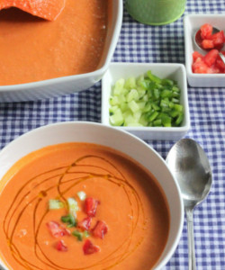

Receta de Gazpacho |
|
|
Ingredientes:
|
 |
Modo de preparaciónTroceamos todos los ingredientes indicados en la proporción que os he puesto y añadimos 250 ml de aceite de oliva, 250 ml de agua de la nevera y 50 ml de vinagre de Jerez, triturando todo en la batidora de vaso o Turmix. No es necesario pelar los tomates o los pimientos porque luego lo vamos a pasar por el colador fino. Si tenéis un robot tipo Thermomix podéis poner todos los ingredientes en el vaso y triturarlos a máxima velocidad durante 4 minutos para obtener una textura perfecta. Una vez triturado, pasamos el gazpacho resultante por el colador fino, apretando con un cucharón para que quede una crema sin pieles ni semillas y lo metemos en la nevera un par de horas para que enfríe bien. Para disfrutar de la receta de gazpacho andaluz tradicional, es conveniente que dejéis enfriar bien el gazpacho, dejándolo un par de horas en la nevera, incluso podéis hacerlo de un día para otro, teniendo la precaución de cubrirlo con un film de cocina para que no se oxide ni pierda sus vitaminas. No podéis añadir hielo como hacen en algunos chiringuitos o quedará excesivamente aguado, así que calculad para hacer el gazpacho con tiempo para que cuando lo llevéis a la mesa esté bien frío y en su punto. Preparad unos picatostes de pan frito, y cortad los ingredientes del gazpacho en taquitos muy pequeños para que los que quieran puedan servirse un poco de tomate, pepino o pimiento por encima de su plato, como veis en la imagen de portada. |
|
Raúl caro Pastorino